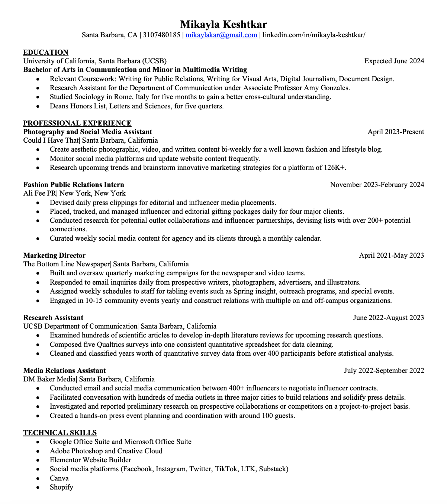
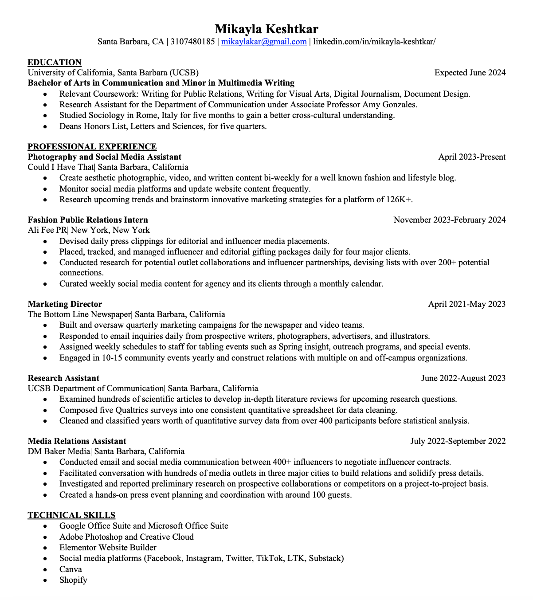

The Goal.
To continue pushing my creative boundaries through innovative digital strategies by using the fundamental writing, mechanical, and professional skills from previous experiences...
Hi! I'm Mikayla!
Originally from the South Bay of Los Angeles, I landed in Santa Barbara for the four years of college, ensuring I wouldn’t stray too far from the beach. My knack for words surfaced early on, around the same time I realized my aversion to numbers and realizing my talents landed elsewhere. Naturally, I studied Communication at UCSB and Minored in Professional Writing with an emphasis in multimedia.
My passion for strategic communications began when I discovered what strategic communications were. And to me, that meant a place where I can use creativity within my words and combine them with my passion for design and collaboration. After launching myself into more writing courses and real-world internships, I began developing the fundamental skills I needed for my creative pursuits and finding my niche in a broad field.
I thrived off working in real-world agencies and got the opportunity to not only grow my portfolio, but see the multiple sides to the ever changing field of PR, digital content, and social media.
To continue pushing my creative boundaries through innovative digital strategies by using the fundamental writing, mechanical, and professional skills from previous experiences...
Know what is means to be a part of a team, as well as my indiviual role for the larger organization.
Let the marekting team while at my schools newspaper, which included corrdinating tabling sceduales, monitering social media, and collaborating with other teams.
Used creative approaches when curating feeds, creating content, blog writing,designing in photoshop, and building relationships with infleuncers and partners.
 
